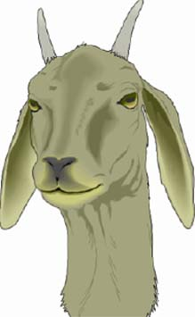
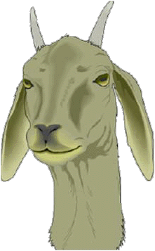
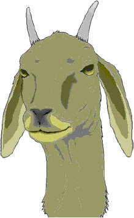

Images cannot be placed into HTML documents; HTML documents consist only of text. Separately-stored images are referenced by <IMG> (image) tags. As a Web browser downloads and assembles page elements, graphics are inserted into Web pages at the points <IMG> tags appear.
IMAGE SOURCES
Images can be obtained from other's Web pages, from CD ROM clip-art collections, from scanned images, from painting, graphics illustration, and photo-processing programs, from digitally captured analog video--live or taped, from digital camers, etc. Copyright issues and other use restrictions need to be considered when obtaining images.
IMAGE COMPRESSION
Images tend to be large relative to text. Compression is used to keep images small and download times reasonable. Two types of compression for still images are supported by most Web browsers: "GIF" and "JPEG". GIF stands for Graphics Interchange Format and is prononced with a soft "g". "JPEG" stands for Joint Photographic Engineering Group and is pronounced "j-peg".
GIF is limited to 256 colors. JPEG allows millions of colors. GIF files tend to be smaller than JPEG files for images with few colors and cartoon-like images with abrupt color boundaries; otherwise JPEG files tend to be smaller. JPEG is a must for accurate rendering of most photographic images. GIF images do provide one clear advantage over JPEG images--their ability to have one user-selected color in the image replaced with "transparency."
Many computers are capable of rendering only 265 colors. On such computers, JPEG images with their much larger color space tend to produce "dithered color" wherein pixels of different colors are intersperced to approximate the actual color.
Graphics programs usually save images in their own native format: Photoshop images in Photoshop format, Corel Draw images in Corel Draw format, etc. Many such programs have the capability of saving images in GIF format or JPEG format or both. With GIF compression, you are often are given options as to the number of colors to use (why use 256 if 32 will do?). With JPEG compression you are required to choose the degree of compression (higher compression gives smaller files but poorer image quality). Both GIF and JPEG are "lossy" compression schemes so it is advisable to keep a versions of images you might desire to change at a later time in their original non-compressed formats. (Technically, non-lossy JPEG compression is possible, but you gain so little in reduced file size it is seldom used.)
In naming image files, end GIF files with ".gif" and JPEG files with ".jpg" so that they will be properly displayed.
Example: JPEG Image vs. GIF Image
An orginal PICT clip-art image was saved as a medium quality JPEG at the left, and as two GIF images at the right (sizes of the images are approx. 20K, 30K, and 10K, respectively). Notice the color "banding" in the second GIF image due to its limited number of colors. The background in the GIF image was assigned transparency--a feature not available with JPEG images.
  
IMAGE RESOLUTION
Images to be displayed on the Web should be no higher than screen resolution (72 dpi); otherwise, download times will be greater than necessary. You may well want to scan images at higher resolution (say 300 dpi or higher) if you ever want to print them, but obtain a 72 dpi "downsampled" version for the Web. Photoshop allows you to reduce the image resolution, but be careful to save a COPY so as not replace the original image unintentionally: increasing image resolution in Photoshop produces graininess in the image! Much flexibility in image manipulation can be achieved by using a screen capture utility to obtain a screen-resolution image. I use the following technique with Photoshop: